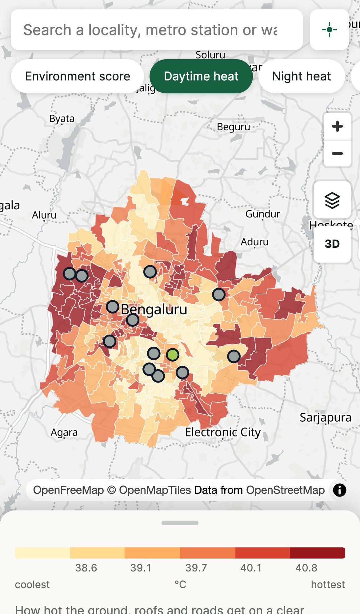
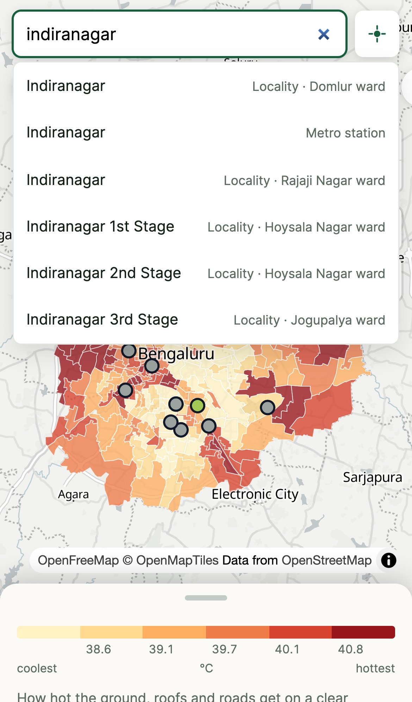
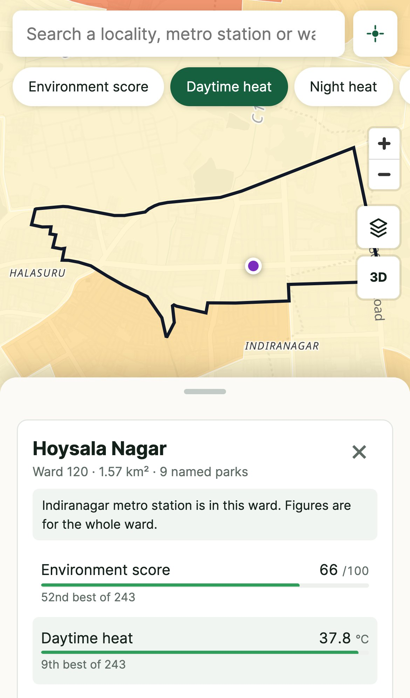
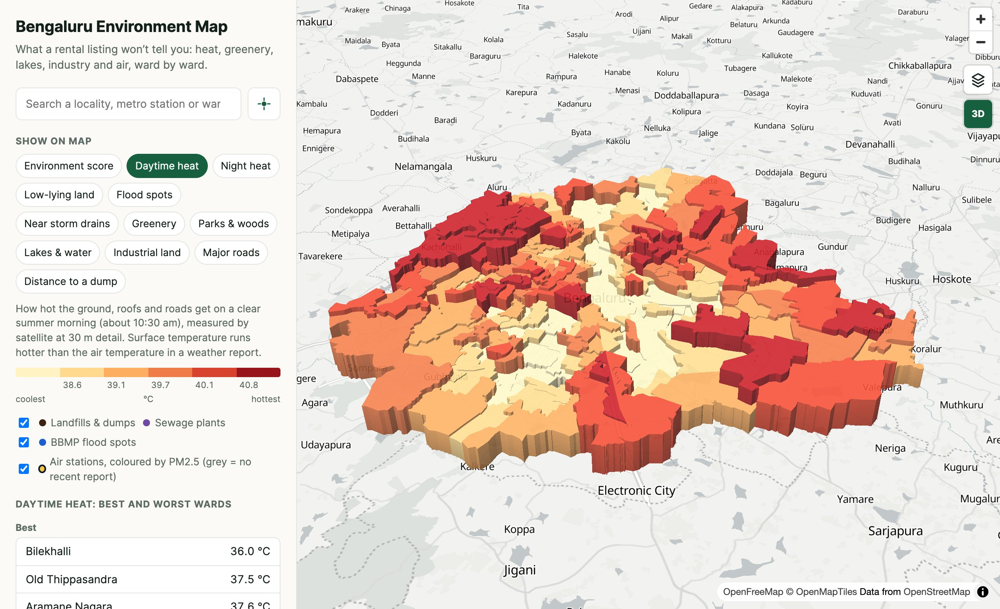
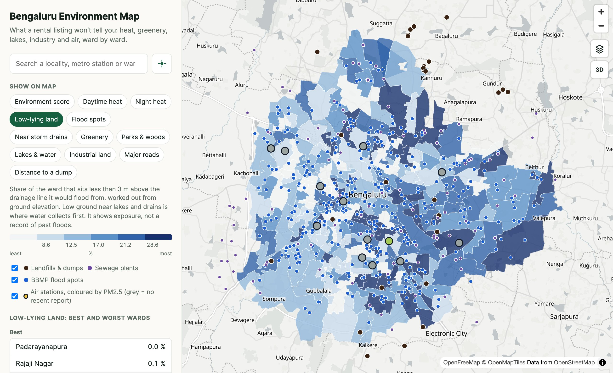
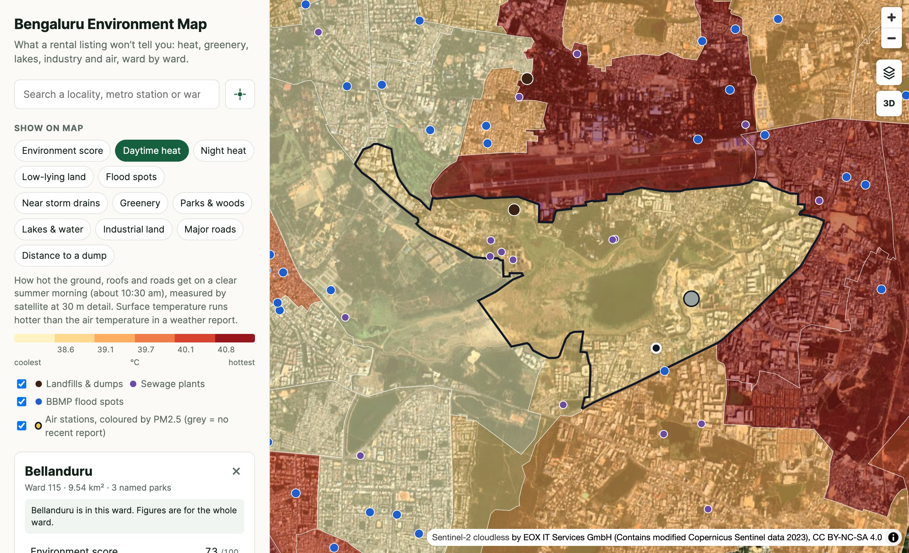

What a rental listing won’t tell you: how hot an area gets, how green it is, whether it floods, what is in the air, and what sits next door. Ward by ward, for the whole city, free to use.
From idea to public website in one working day. Built in conversation with Claude Code.
1 · The idea
Property sites tell you the rent. Nobody tells you the climate.
When people choose where to live in Bengaluru, they can look up rent ranges, flat sizes and landlord reviews in seconds. They cannot easily find out how hot the area gets, how many trees it has, whether it is near a dump or an industrial belt, or whether it sits on low ground that floods.
“Nobody is telling what the climate is out there: how much heat it produces, how many trees it has, how many lakes, what the CO₂ level is. I just want to make people aware.” The brief that started the project, in the founder’s words, lightly edited
The idea is a single public map of Bengaluru where anyone can pick an area and see its environmental picture: heat, greenery, parks and lakes, flood exposure, industry, waste sites, traffic and air. The first audience is people renting or buying a home. The wider aim is awareness: making the environmental differences between neighbourhoods visible to everyone who lives in them.
What was asked for at the start
A map at the level of a ward or locality, not the whole city as one number
Heat: which areas run hot, which stay cooler, and why
Greenery, parks, trees and lakes
Industrial areas, sewage and dumping grounds
Traffic and noise
CO₂, methane and other gases in the air
Past floods, fires and other disasters
Real data from real sources, kept up to date
Most of this now exists in a working form. A few items turned out to have no trustworthy public data yet; those are listed plainly in section 6.
243wards covered, the whole BBMP area
12map layers to switch between
1,120localities and metro stations searchable
9open data sources combined
2 · What exists today
A live website that works on a phone
Open the link, search for a locality or metro station, or tap “my area”. The map opens the ward you asked about and shows every figure next to its rank among all 243 wards, so “38.9°C” comes with “59th coolest of 243”.



On a phone: the full-screen map, search by locality or metro station, and a ward profile that slides up from the bottom.
What you can do with it
Compare areas on twelve layers: environment score, daytime heat, night heat, low-lying land, flood spots, storm drains, greenery, parks, lakes, industrial land, major roads and distance to a dump
Search 1,046 localities and 74 metro stations by the names people actually use, such as “Indiranagar 2nd Stage”
Find your own area with one tap using the phone’s location
See the sources of trouble: landfills, dumps, sewage plants and BBMP’s listed flood spots as dots on the map
Check air readings from government monitors and community sensors, each labelled with when it was measured
Change the view: light, streets, dark or satellite, and a 3D mode where each ward rises as a block

3D view of daytime heat. Each ward is a block; the hottest stand tallest. It is a graphic of the data, not a model of the terrain.

Low-lying land: the share of each ward sitting less than 3 m above the drainage line it would flood from. The eastern and south-eastern belt stands out.
3 · What the map already shows
The differences between neighbourhoods are large
These come straight from the data on the live site.
7°Cgap in summer surface heat between the coolest and hottest ward (36.0°C to 43.2°C)
49%of Bellanduru ward is low-lying land, second highest in the city
62%of Peenya ward is industrial land
375flood-prone locations listed by BBMP, mapped as individual dots
Heat follows concrete. The hottest wards on a summer morning are dense, built-up ones such as Devara Jeevanahalli, Kaveripura and Hegganahalli. The coolest sit beside lakes and tree cover, such as Bilekhalli and Old Thippasandra.
Greenery is very uneven. Agaram, New Bayappanahalli and Aramane Nagara are several times greener by satellite measure than Chickpete or Kempapura Agrahara.
Flood exposure is not where the official list says. BBMP’s published lists have no flood spot in Bellanduru ward, an area known for flooding. Ground elevation tells a different story, which is why the map shows both.
One area can be good and bad at once. Bellanduru is among the coolest wards at night and fairly green, yet half of it is low-lying. A single “good area / bad area” label hides exactly what a home-seeker needs to know.

Bellanduru ward on the satellite view, with its profile open: cool at night, but 49.2% low-lying land.
4 · How the idea became real
Ten steps, one day
The whole build happened on 12 October 2026 as a running conversation: the founder described what was wanted and reacted to each version; Claude Code found the data, wrote the software, tested it and put it online. Several steps were corrections after something did not hold up.
From a spoken idea to a first map.Checked which open data sources actually respond, then built a working map of all 243 wards with satellite heat, greenery, parks, lakes, industry, roads and waste sites.
Search by the names people use.Added 1,046 localities and 74 metro stations, each tied to the ward it sits in.
Flood data.A commercial flood map was suggested as a source. Its data is private, so it was not copied. The public BBMP flood-location lists it relies on were found and used instead.
Live air quality.A popular air-quality site was suggested. It blocks automated access, so it was not scraped. Government monitoring stations were connected through OpenAQ, an open service.
Honest labelling of stale readings.Most government stations turned out to be five days behind. Every reading now shows when it was measured, and silent stations are greyed out.
A proper phone version.Full-screen map, floating search, a slide-up details sheet and a “my area” button.
Going public.Deployed to Vercel under the founder’s account, with the data key kept out of public view.
Sharper satellite data through Google Earth Engine.Heat improved from 1 km to 30 m detail and greenery from 250 m to 10 m. A new low-lying land layer closed the Bellandur flood gap.
Fixes from real phone use.Dots could not be tapped on a phone. Taps now allow for fingertip size.
Map views and 3D.Light, streets, dark and satellite views, plus 3D blocks. Tapping a 3D block picked the wrong ward; picking now follows the line of sight.
5 · Where the data comes from
Nine open sources, each credited on the site
What it shows
Source
Detail and freshness
Daytime heat
Landsat 8 and 9 satellites, via Google Earth Engine
30 m. Nine cloud-free passes, March to mid-May 2026, about 10:30 am
Night heat
NASA MODIS Aqua satellite
1 km. Summer 2026, about 1:30 am
Greenery
Sentinel-2 satellites, via Google Earth Engine
10 m. 33 low-cloud images, January to April 2026
Low-lying land
MERIT Hydro elevation data, via Google Earth Engine
90 m. Height above the nearest drainage line
Flood spots
BBMP lists of flood-vulnerable, flood-prone and low-lying locations, published on OpenCity
Mapped by volunteers; as complete as their coverage
Air monitoring stations
Government (CPCB / KSPCB) monitors and community sensors, via OpenAQ
13 stations, checked every 30 minutes
Modelled air, CO₂, methane, weather
Open-Meteo
Hourly, but a regional model: nearby wards read alike
Ward boundaries
BBMP 243-ward delimitation, via KGIS and DataMeet
Official boundaries
The environment score
Each ward gets a score out of 100 by ranking it against the other wards: heat 30%, greenery 25%, flood exposure 15%, parks and lakes 10%, major roads 10%, industry 10%. The weights are a first judgement, not a standard, and the site says so. The individual layers matter more than the single number.
How it is put together
A data script gathers the sources and works out every figure for every ward. The website then loads those figures and draws the map in the browser. Air station readings are fetched live through a small server function so the access key stays private. The site runs on Vercel; the satellite processing runs on Google Earth Engine under a non-commercial registration.
6 · The impact it can create
Making the invisible part of a neighbourhood visible
The map has only just gone public, so what follows is what it makes possible, not results already achieved.
People renting or buying a home
A family can check, before signing, whether an area is one of the hottest in the city, sits on low ground, or is next to a dump. Today that takes local knowledge or luck. Flood exposure in particular can mean years of damage and cost.
Residents and welfare associations
A ward that is hotter, less green or more flood-exposed than its neighbours now has numbers and a map to show when it asks for trees, drain repairs or a park.
Health and daily life
Heat and bad air fall hardest on children, older people and outdoor workers. Seeing which wards stay hot at night, and where the nearest air monitor is, helps people and local clinics understand their own risk.
Journalists, students and researchers
The city’s environmental inequality becomes something anyone can open and quote, ward by ward, with the sources listed.
The city itself
The gap between BBMP’s flood list and the low-lying land layer is the kind of finding a public map surfaces. It also shows where monitoring is thin: 13 air stations for 243 wards.
The property market
If buyers start asking about heat and flood exposure, builders and landlords have a reason to care about trees, drainage and open space. That is a slow effect, and the one with the widest reach.
What would turn potential into real impact
People finding it: sharing in resident groups, housing forums and local media
Trust: keeping every figure sourced and every weakness stated, as the site does now
Staying current: scheduled data refreshes instead of a one-day snapshot
Finer detail: locality and street level, where housing decisions are actually made
7 · Honest limits and what comes next
What it does not do yet
Limits today
Ward level only. Conditions change street by street, especially flooding. A ward figure is an average.
Air is mostly not live. Government stations reached through OpenAQ were five days behind on launch day. Only one community sensor was current.
CO₂ and methane are model estimates for the wider region. No public source measures them by neighbourhood.
Flood layers show exposure, not history. There is no dated record of past floods or fires yet.
No measured noise or traffic. Major-road density stands in for both.
No tree count. A satellite tree-cover figure was tried and rejected as unreliable; greenery is the measure used.
A snapshot. Satellite and map figures were built on 12 October 2026 and do not refresh automatically.
Non-commercial data terms. Earth Engine and the satellite imagery are free for non-commercial use only.
Next steps, in order
Fresher air data from the government’s own hourly feed (data.gov.in)
Heat and greenery as zoomable imagery, street by street, instead of one colour per ward
Fire history from NASA’s fire detection service, and dated flood records
Real traffic in place of the road-density stand-in
Weekly automatic refresh of all figures
Satellite NO₂ and methane for a daily, city-wide view of the air
Kannada language support and shareable links to a ward
Decisions for the founder
Will the site stay free and non-commercial? This decides which data sources can be used.
Who should see it first: renters, resident groups or the press?
Should the single score stay, or should the layers stand on their own?
Figures in this note are taken from the live site as built on 12 October 2026. Data credits: NASA / USGS Landsat and MODIS, Copernicus Sentinel-2, MERIT Hydro, BBMP via OpenCity, OpenStreetMap contributors, OpenAQ, Open-Meteo, KGIS and DataMeet. Satellite base map: Sentinel-2 cloudless by EOX.